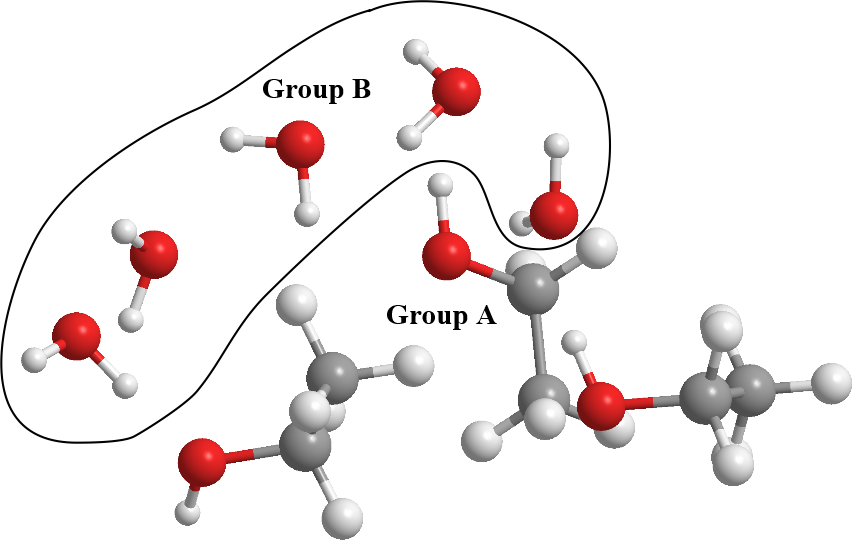
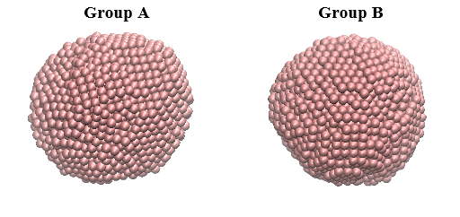

Analysis Criteria - Molecular Groups¶
The Atom Range Definition Section contains a set of criteria to selectively pick atoms for analysis according to needs. For example, it is sometimes needful to pick certain portion or class of atoms for analysis, or even to carry out analysis based on molecules, rather than the individual atoms that made up a molecule.
- TIP
Before carry out analysis on your system models, think how you would want to do it, and what do you intend to achieve. Then, select the appropriate parameters in the Atom Range Definition Section.
Below shows an example of the Section. Note the number in brackets are added for illustration purposes that should not include in the actual inpout files.
--- Atom Range Definition and overall conditions for analysis as below.
(1) 1 8 * Range of atom index (Group A). This must always define.
(2) 9 16 * Range of atom index (Group B), if applicable. Or put 'none'.
(3) 1 * Analysis type: 1=atom-based 2 = molecule-base
(4) 1 * Atom-based analysis criteria: 1=all 2= within molecules 3= between molecules
(5) acid 8 * Molecule-base analysis: name and no of atoms in Group A (MOLECULE A1)
(6) none * Molecule-base analysis: name and no of atoms in Group A (MOLECULE A2, or 'none')
(7) none * Molecule-base analysis: name and no of atoms in Group B (MOLECULE B1, or 'none')
(8) none * For molecule-base analysis: name and no of atoms in Group B (MOLECULE B2, or 'none')
(9)all * Range of MD time (ps) samples: t1 t2 (put 'all' if all samples to be included).
(10)1 * Assign all atoms with unit mass = 1.0 (1=yes, 0=no)
(11)0.0 0.0 0.0 * Translation marix on coordinates:x y z (assume orthorhombic cell)
(12)auto * Periodic boundary? 0=no, other number = type of box (DLPOLY), auto = obtain from HISTORY
(13)40.0 0.000 0.0000 * Cell vector a (x, y, z)
0.000 40.0 0.0000 * Cell vector b (x, y, z)
0.0 0.000 40.0 * Cell vector c (x, y, z)
(14)2 * Exclude any atoms for analysis? 0=no, or Number of EXCLUDE statements shown below.
EXCLUDE 2000 to 5000
EXCLUDE 5050 to 5070
…
…

Molecule Groups
Before carry out any analysis, DL_ANALYSER needs to know how would you want to group your atoms. For an atomic system, you can generally divide your atoms into two groups - Molecular Group A and Molecular Group B. The ranges of atom index for each Group can be defined in Option (1) and Option (2), respectively.
Depends on which analysis options you have chosen, sometimes analysis is made between the Groups. Otherwise, the analysis is carried out within the Groups, respectively.
Note
Group A atoms must always be defined but Group B definition is optional.
For example, diagram below shows a system consists of some ethanol molecules with water. The ethanol molecules were assigned to Group A, while water molecules were assigned to Group B.
{kind=link}
This would mean that in the HISTORY files, the water and ethanol molecules must be separately grouped together, so that Group A and Group B can be conveniently assigned.
Sometimes, even if the system consists only one type of atom, it is still needful to arrange the atoms into groups. For instance, consider a system consists of two silver nanoparticles, each consists of a thousand silver atoms as shown below.
{kind=link}
If the atoms are arranged correctly, then Group A can be assigned with atom range from 1 to 1000, while Group B is assigned with atom range from 1001 to 2000. Obviously, depending on your needs, you can simply assign a full range of 1 to 2000 for Group A only.
- TIP
Think carefully what you intend to measure before setting up your force field model.